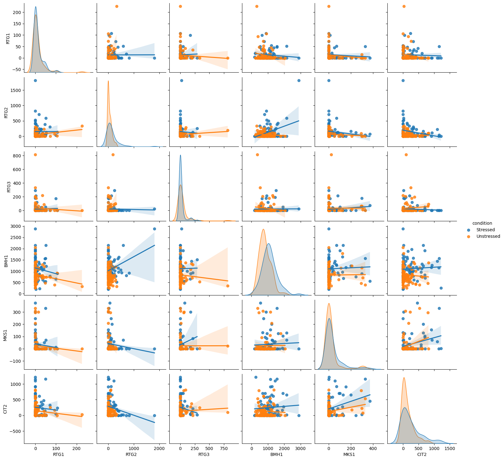

Single Cell RNA Seq data
Contents
Single Cell RNA Seq data#
Conlsusion#
The expression level of CIT2 changed significently (p-value=0.13). Therefore, the analysis implies that the stress turns on the retrograde response.
BMH has highes expression level among the RTG genes, which locates in \(10^{3}\)
RTG1 has the lowese expression level. Our RTG model needs further verification because we assume that the expression level of RTG1 is much larger than others.
Reference#
Plotting Single Cell RNA Data#
Method#
Original data is separated into “Stressed” and “Unstressed”
Applied D3E tool to Seq data
Conclusion#
Dropout event inferences the correlation analysis
Reqiure Single cell analysis tool
import os
os.listdir("data/")
['GSE102475_RTG-Expression-Table_zeroRemoved.csv',
'SingleCellRNAseq_yeast_GSE102475_LabelSep.txt',
'Single Cell RNAseq_yeast_GSE102475.xlsx',
'd3e_SC_seq_resp_GSE102475.csv',
'GSE102475_GASCH_NaCl-scRNAseq_NormData.txt',
'SingleCellRNAseq_yeast_GSE102475_LabelSep.out',
'd3e_SC_resp_RtgGenes_GSE102475.csv']
# Access original xlsx file
import seaborn as sns
import pandas as pd
import matplotlib.pyplot as plt
# Alias of gene names
alias = {
"RTG1": "YOL067C",
"RTG2": "YGL252C",
"RTG3": "YBL103C",
"BMH1": "YER177W",
"MKS1": "YNL076W",
"CIT2": "YCR005C"
}
# Read original Single-cell seq data
data = "data/SingleCellRNAseq_yeast_GSE102475_LabelSep.txt"
df = pd.read_table(data)
dft = df.set_index("GeneID")
dft = dft.transpose()
dft = dft.filter(items= list(alias.values()))
dft.columns = list(alias.keys())
label = []
conds = ["Stressed", "Unstressed"] # Two conditions
for i in dft.index.values:
for cond in conds:
if cond in i:
label.append(cond)
dft["condition"] = label
sns.pairplot(dft, hue="condition", kind="scatter" )
<seaborn.axisgrid.PairGrid at 0x7f38f4234af0>
sns_plot = sns.pairplot(dft, hue="condition", kind="reg")
sns_plot.savefig("img/rna_pairPlot.pdf")

# Show dropout events
dft.drop( ["condition"], axis=1)
| RTG1 | RTG2 | RTG3 | BMH1 | MKS1 | CIT2 | |
|---|---|---|---|---|---|---|
| Stressed | 0.00 | 0.00 | 0.00 | 1157.23 | 0.00 | 1146.01 |
| Stressed.1 | 29.13 | 227.58 | 46.42 | 1160.11 | 0.00 | 320.14 |
| Stressed.2 | 3.54 | 109.65 | 0.00 | 1297.91 | 0.00 | 253.01 |
| Stressed.3 | 0.00 | 0.00 | 50.76 | 1920.72 | 103.34 | 702.95 |
| Stressed.4 | 0.00 | 252.09 | 289.61 | 1506.30 | 0.00 | 14.89 |
| ... | ... | ... | ... | ... | ... | ... |
| Unstressed.78 | 0.00 | 0.00 | 13.68 | 608.32 | 5.72 | 134.01 |
| Unstressed.79 | 0.00 | 0.00 | 12.77 | 1239.51 | 208.16 | 178.88 |
| Unstressed.80 | 0.00 | 0.00 | 0.00 | 1789.29 | 125.03 | 20.15 |
| Unstressed.81 | 0.00 | 163.95 | 15.25 | 620.78 | 0.00 | 0.00 |
| Unstressed.82 | 0.00 | 0.00 | 0.00 | 922.87 | 0.00 | 0.00 |
163 rows × 6 columns
D3E: Single-cell seq data analysis#

Transcriptional bursting model
Sequencing data is analysed by D3E tool (github)
The results are derived by the following bash command:
python D3ECmd.py SingelCellRNAseq_yeast_GSE102475_LabelSep.txt SingelCellRNAseq_yeast_GSE102475_LabelSep.out Stressed Unstressed -m 1 -t 0 -z 0 -n 1 -v
# Read analysis
import pandas as pd
d3e = pd.read_table("data/SingleCellRNAseq_yeast_GSE102475_LabelSep.out")
d3e = d3e.set_index("#GeneID")
d3eT = d3e.transpose()
# Display
f = d3eT.filter( list(alias.values()), axis=1)
f.columns = list(alias.keys())
f
| RTG1 | RTG2 | RTG3 | BMH1 | MKS1 | CIT2 | |
|---|---|---|---|---|---|---|
| a1 | 0.2861 | 0.2847 | 0.2108 | 2.9294 | 0.2084 | 0.2666 |
| b1 | 2.4216 | 7.4406 | 2.4531 | 221.3906 | 1.8381 | 1.8472 |
| g1 | 174.1598 | 6324.6621 | 388.0073 | 123817.1063 | 523.5774 | 2593.8358 |
| GOF1 | 0.0129 | 0.071 | 0.000083 | 0.266 | 0.000021 | 0.164 |
| a2 | 0.2361 | 0.2493 | 0.1865 | 3.2938 | 0.182 | 0.2708 |
| b2 | 4.4817 | 1.6106 | 4.7217 | 77.0496 | 2.2689 | 1.7023 |
| g2 | 429.6977 | 585.6844 | 1752.7096 | 30239.6622 | 561.6311 | 1392.6927 |
| GOF2 | 0.000006 | 0.0409 | 0.000008 | 0.394 | 0.000065 | 0.199 |
| s1 | 76.1111 | 892.9776 | 168.2808 | 577.8343 | 302.7306 | 1467.0253 |
| f1 | 0.2548 | 0.2737 | 0.1934 | 2.8902 | 0.1862 | 0.2319 |
| d1 | 0.1098 | 0.0383 | 0.083 | 0.0132 | 0.1066 | 0.1295 |
| s2 | 104.0886 | 382.6186 | 399.5815 | 404.9042 | 267.5858 | 847.9447 |
| f2 | 0.2234 | 0.2148 | 0.1789 | 3.1583 | 0.1676 | 0.2327 |
| d2 | 0.0537 | 0.1386 | 0.0405 | 0.0412 | 0.079 | 0.1402 |
| Rs | 0.4516 | -1.2227 | 1.2476 | -0.5131 | -0.178 | -0.7909 |
| Rf | -0.1899 | -0.3498 | -0.1125 | 0.128 | -0.1522 | 0.0049 |
| Rd | -1.0334 | 1.8545 | -1.0329 | 1.6464 | -0.4313 | 0.1143 |
| pSize | 0.0 | 0.0 | 0.0 | 0.0 | 0.0 | 0.0 |
| pFreq | 0.0 | 0.0 | 0.0 | 0.0 | 0.0 | 0.64 |
| pDuty | 0.0 | 0.0 | 0.0 | 0.0 | 0.0 | 0.0 |
| p-value | 0.233 | 0.00946 | 0.989 | 0.00296 | 0.0983 | 0.128 |
| mu1 | 17.2068 | 221.9025 | 25.7976 | 1611.5946 | 47.8059 | 349.0069 |
| cv1 | 1.8810 | 2.3586 | 2.6313 | 0.6272 | 2.1562 | 1.3991 |
| mu2 | 18.0878 | 80.7769 | 50.7607 | 1239.5666 | 33.158 | 195.5971 |
| cv2 | 2.9881 | 1.4707 | 3.6720 | 0.5688 | 3.0283 | 1.4094 |
# Save results
d3e.to_csv("data/d3e_SC_seq_resp.csv")
f.to_csv("data/d3e_SC_resp_RtgGenes.csv")
Mean and Std are not simply the calculation of read-count table#
"""
Show that the mean value and std of d3e result are not simply the mean and std of read-count table
"""
import numpy as np
# Set a gene
GeneName = "RTG3"
# Retrieve data
s = df[df["GeneID"] == alias[GeneName]].transpose()
d = s.to_dict()
key = list(d.keys())[0]
val = list(d[key].values())
del val[0]
val = np.array(val)
# Cal mean and cv
mean = np.mean(val[val!=0.0])
cv = np.std(val[val!=0.0])
# Print
print("TABLE CALCULATION")
print("MEAN: {}(Table)/\t {}(mu1)/\t {}(mu2)".format(mean, f[GeneName]["mu1"], f[GeneName]["mu2"]))
print("STD: {}(Table)/\t {}(cv1)/\t {}(cv2)".format(cv,f[GeneName]["cv1"],f[GeneName]["cv2"]))
TABLE CALCULATION
MEAN: 84.98176470588237(Table)/ 25.7976(mu1)/ 50.7607(mu2)
STD: 131.1681609308595(Table)/ 2.6313(cv1)/ 3.6720(cv2)
Plotting D3E results#
import pandas as pd
d3e = pd.read_csv("data/d3e_SC_resp_RtgGenes.csv", index_col=0)
d3e
| RTG1 | RTG2 | RTG3 | BMH1 | MKS1 | CIT2 | |
|---|---|---|---|---|---|---|
| a1 | 0.286100 | 0.28470 | 2.108000e-01 | 2.929400e+00 | 2.084000e-01 | 2.666000e-01 |
| b1 | 2.421600 | 7.44060 | 2.453100e+00 | 2.213906e+02 | 1.838100e+00 | 1.847200e+00 |
| g1 | 174.159800 | 6324.66210 | 3.880073e+02 | 1.238171e+05 | 5.235774e+02 | 2.593836e+03 |
| GOF1 | 0.012900 | 0.07100 | 8.320000e-05 | 2.660000e-01 | 2.140000e-05 | 1.640000e-01 |
| a2 | 0.236100 | 0.24930 | 1.865000e-01 | 3.293800e+00 | 1.820000e-01 | 2.708000e-01 |
| b2 | 4.481700 | 1.61060 | 4.721700e+00 | 7.704960e+01 | 2.268900e+00 | 1.702300e+00 |
| g2 | 429.697700 | 585.68440 | 1.752710e+03 | 3.023966e+04 | 5.616311e+02 | 1.392693e+03 |
| GOF2 | 0.000006 | 0.04090 | 8.060000e-06 | 3.940000e-01 | 6.540000e-05 | 1.990000e-01 |
| s1 | 76.111100 | 892.97760 | 1.682808e+02 | 5.778343e+02 | 3.027306e+02 | 1.467025e+03 |
| f1 | 0.254800 | 0.27370 | 1.934000e-01 | 2.890200e+00 | 1.862000e-01 | 2.319000e-01 |
| d1 | 0.109800 | 0.03830 | 8.300000e-02 | 1.320000e-02 | 1.066000e-01 | 1.295000e-01 |
| s2 | 104.088600 | 382.61860 | 3.995815e+02 | 4.049042e+02 | 2.675858e+02 | 8.479447e+02 |
| f2 | 0.223400 | 0.21480 | 1.789000e-01 | 3.158300e+00 | 1.676000e-01 | 2.327000e-01 |
| d2 | 0.053700 | 0.13860 | 4.050000e-02 | 4.120000e-02 | 7.900000e-02 | 1.402000e-01 |
| Rs | 0.451600 | -1.22270 | 1.247600e+00 | -5.131000e-01 | -1.780000e-01 | -7.909000e-01 |
| Rf | -0.189900 | -0.34980 | -1.125000e-01 | 1.280000e-01 | -1.522000e-01 | 4.900000e-03 |
| Rd | -1.033400 | 1.85450 | -1.032900e+00 | 1.646400e+00 | -4.313000e-01 | 1.143000e-01 |
| pSize | 0.000000 | 0.00000 | 0.000000e+00 | 0.000000e+00 | 1.280000e-16 | 0.000000e+00 |
| pFreq | 0.000000 | 0.00000 | 2.680000e-16 | 2.490000e-13 | 0.000000e+00 | 6.400000e-01 |
| pDuty | 0.000000 | 0.00000 | 0.000000e+00 | 0.000000e+00 | 0.000000e+00 | 2.140000e-15 |
| p-value | 0.233000 | 0.00946 | 9.890000e-01 | 2.960000e-03 | 9.830000e-02 | 1.280000e-01 |
| mu1 | 17.206800 | 221.90250 | 2.579760e+01 | 1.611595e+03 | 4.780590e+01 | 3.490069e+02 |
| cv1 | 1.881000 | 2.35860 | 2.631300e+00 | 6.272000e-01 | 2.156200e+00 | 1.399100e+00 |
| mu2 | 18.087800 | 80.77690 | 5.076070e+01 | 1.239567e+03 | 3.315800e+01 | 1.955971e+02 |
| cv2 | 2.988100 | 1.47070 | 3.672000e+00 | 5.688000e-01 | 3.028300e+00 | 1.409400e+00 |
import matplotlib
import matplotlib.pyplot as plt
import numpy as np
# DATA
st_means, st_std = d3e[d3e.index == "mu1"].values, d3e[d3e.index == "cv1"].values
ust_means, ust_std = d3e[d3e.index == "mu2"].values, d3e[d3e.index == "cv2"].values
pvalues = d3e[d3e.index == "p-value"].values
name_of_genes = list(d3e.keys())
# SETTING
st_means, st_std, ust_means, ust_std, pvalues = st_means.flatten(), st_std.flatten(), ust_means.flatten(), ust_std.flatten(), pvalues.flatten()
ind = np.arange(len(st_means)) # the x locations for the groups
width = 0.35 # the width of the bars
## Add p value
name_p = [ name + "\n(p-value:{0:.2f})".format(p) for name, p in zip(name_of_genes, pvalues )]
name_of_genes = name_p
# PLOTTING
fig, ax = plt.subplots(figsize=(10,7))
rects1 = ax.bar(ind - width/2, st_means, width, yerr=st_std,
label='Stressed')
rects2 = ax.bar(ind + width/2, ust_means, width, yerr=ust_std,
label='Unstressed')
## Add some text for labels, title and custom x-axis tick labels, etc.
ax.set_ylabel('Expression Level (normalized)')
ax.set_title('Stressed response of RTG gnes')
ax.set_xticks(ind)
ax.set_xticklabels( name_of_genes)
ax.legend()
def autolabel(rects, xpos='center'):
"""
Attach a text label above each bar in *rects*, displaying its height.
*xpos* indicates which side to place the text w.r.t. the center of
the bar. It can be one of the following {'center', 'right', 'left'}.
"""
ha = {'center': 'center', 'right': 'left', 'left': 'right'}
offset = {'center': 0, 'right': 1, 'left': -1}
for rect in rects:
height = rect.get_height()
ax.annotate('{}'.format(height),
xy=(rect.get_x() + rect.get_width() / 2, height),
xytext=(offset[xpos]*3, 3), # use 3 points offset
textcoords="offset points", # in both directions
ha=ha[xpos], va='bottom', color="black")
autolabel(rects1, "left")
autolabel(rects2, "right")
fig.tight_layout()
plt.yscale("log")
plt.show()
fig.savefig("img/stressed_response_mean.pdf")
fig.savefig("img/stressed_response_mean.png", dpi=100)